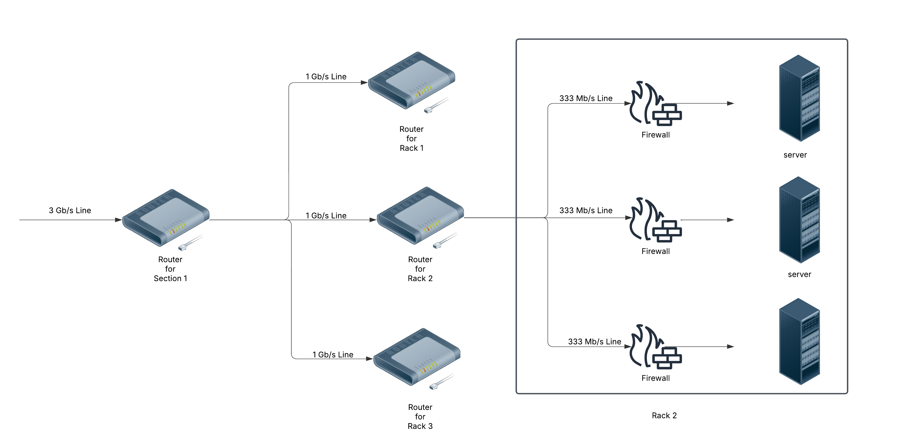
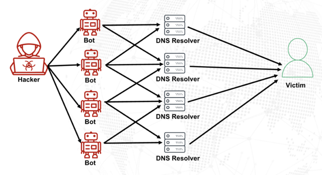

A Techical guide to DDoS
Introduction
Distributed Denial Of Service, or DDos multiple devices flooding a target, typically a server with data. The goal is overwhelm either the network connection or the system's applications, making them unable to function properly. Most of the modern forms of DDOS attacks are either at Layer 4(Transport Layer) or Layer 7(The Application Layer).
In simple words, Imagine a highway with a fixed number of lanes. If someone floods it with cars, legitimate drivers can't get through. A DDOS attacks works similarly.
Core Resources at Stake
- Bandwidth: How much data the network can handle at once
- Processing Power: The CPU's capacity to proces incoimg requestes
- Memory: Ram used to store data temporarily
- Connection Tables: A list of active network connection, critical for protocols like TCP.
UDP is the most utilized protocol for DDoS attacks. UDP is preffered over TCP based attacks because TCP requires a connection to be made before any data can be transfered; if server or firewall refuses the connection, no data can be sent hence no attack.
If we have to use a anology, suppose you have received a letter from post office, this letter reaches to you without your authorizatoin and once you receive it you can do whatever with it but still you are going to receive it, you want it or not. So, UDP allows for the client to simply send data to the server without first making a connection. This is the reason why firewalls are useless against UDP attacks, because by the time packet reaches your server it is already traveled through your server's datacenter. If the datacenter's router is on a 1gb/s connnection and more than 1gb/s of UDP packets are being sent, the router is going to be physically unable to process them all, rendering your server inaccessible (regradless of if server processes the data or not)

If we consider our hypothetical, inaccurate and best datacenter: We have 3 Gb/s line connnecting section 1 of the datacenter to the rest of the network, that 3 Gb/s line is then split into 3x 1 Gb/s lines for each of the 3 racks, each rack contains 3 servers, so each 1 Gb/s line is split into 3x 333 Mb/s lines. Let’s assume all 3 servers in rack 1 have the world’s best firewall; it might protect them all from DDoS, but if the attack exceeds 333 MB/s, the server will be offline regardless, if the attack exceeds 1 Gb/s the rack will be offline, and if the attack exceeds 3 GB/s the entire section will be offline. No matter how good the server’s firewall is, the server will be offline if the upstream routers cripple under the load, it’s theoretically possible to take offline an entire datacenter or even a whole country by sending a large enough attack to one server withing that datacenter/country. Mitigation of UDP attacks can only be performed by the datacenter themselves by deploy specialized routers (commonly known as hardware firewalls) at strategical points within the network. The aim is to filter out some of the DDoS at stronger parts of the network, before it reaches the downstream routers. A common method of “mitigation” among lazy ISPs is to simply stop routing any traffic to the IP address being attacked (known as null routing), this results in the server being offline until the datacenter staff decide otherwise, meaning the attacker can stop attacking and enjoy a nice nap.
Application Based Attack (Layer 7)
Layer 7 DDoS attacks are easy to carry out and also easy to mitigate them, here the idea is not to over-saturate the network but simply lock up application on the server. Since the whole network or server is not going down it's easy for the sysadmin to login and begin to mitigate. System administrators can log in to investigate and implement mitigations.
- They can analyze logs to identify malicious IPs.
- They can apply rate-limiting rules or block suspicous traffic using tools like iptables or a Web Application Firewall(WAF).
An example of layer 7 attack against a website would be to constantly send GET requests to a page which performs lots of SQL queries; most SQL servers have a limit on the amount of quesries they can process at one time, any more and the server will have to start denying requests, preventing legitimate clinets from using the website.
Attackers do not need to flood the server with requests, as it is possible to simpliy overlaod the application by maintaining open connections(without sending tonnes of data).
Example of this would be Slowris. Where the attackers opens connections to the HTTP server and sends HTTP requests bit by bit, as slowly as possible. The server cannot process a request until it is complete, so it just waits for forever until the entrie request has been sent; once the maximum number if client is hit, the server will just going to ignore any new clients until it's done with the old ones.
DDoS Amplification
Among DDoS variants, amplification attacks are particularliy insidious due to their ability to generate large amount of traffic with very minimal efforts from attacker. Amplification attacks almost use UDP protocols such as DNS, NTP or memcached because it lacks a handshake (already disccussed above) which results a small input from attacker which results in disproportionately large output aimed at the victim.

How does this attacks work? generally attackers select a protocol which significantly exceed request sizes e.g., DNS or NTP. After this they either directly spoof or use a botnet and through this the attacker sends requests to servers supporting the protocol, falsifying the source IP to match the victim's IP.
Each server, unaware of the spoof sends a large amount of data to the victim which results in exhausting its bandwidth or server resources.
Suppose a attacker controls a botnet of 1000 compromised devices and if each bot sends a spoofed DNS queries to 100 open DNS resolvers, with the source IP set to the target. With each query is 60 bytes, and each response is 3000 bytes(amplification factor of 50x). Traffice sent by per bot would be 100 60 = 6000 bytes now, with 1000 bots 6000 byets = 6000000(6 MB) and traffic received would be around 300 MB
Recent Advancements & Strategies against Amplification Atttacks
- Many ISPs and network operators have BCP38, a guideline to filter out packets with face source IPs. This means they check if the source IP belongs to their network before forwarding traffic. For example, the MIT ANA Spoofer Project shows over 80% of the Internet now blocks spoofed packets
- The IETF has developed Source Address Validation Improvement (SAVI), which adds more detailed checks at the link level, like ensuring devices on the same network can't fake each other's IP addresses. This complements broader network filters and is being standardized for wider use
- Ongoing research continues to enhance source address validation techniques. Hop count filtering (HCF), which analyzes the number of hops a packet has traveled to detect spoofing, is one such method, with recent IEEE publications exploring its efficacy IEEE on HCF. Additionally, the use of IPsec for securing tunneling protocols is gaining traction, with recent studies suggesting it can protect against exploitation by threat actors CSO Online on Tunneling. These advancements, while not yet widely deployed, represent future directions for mitigating amplification attacks.
Future of DDoS
- DDoS attacks are growing and occuring more than often. A recent data by F5 Labs has shown 112% increase in the attacks from 2022 to 2023 with 2127 attacks recorded futhermore attacks grew 46% in 2024. A record breaking 5.6 Tbps attack was mitigated in late 2024, highlighting how rapidly attacks are evolving.
- Now attackers are also trying to leverage AI to automate attack strategies, analyze network traffic patterns, and adapt in real-time to evade detection but defenders are using AI for early detection and real-time mitigation. This creates a continuous arms race, with both sides leveraging AI to gain an edge.
- IoT devices are being targeted more than ever as often lack robust security, are prime targets for creation of botnets. A recent report showed that IoT bots increassed five-fold over 12 months, generating 40% of DDoS traffic.